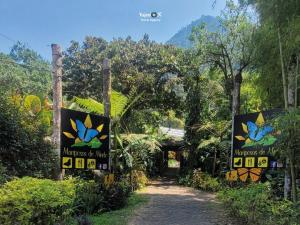
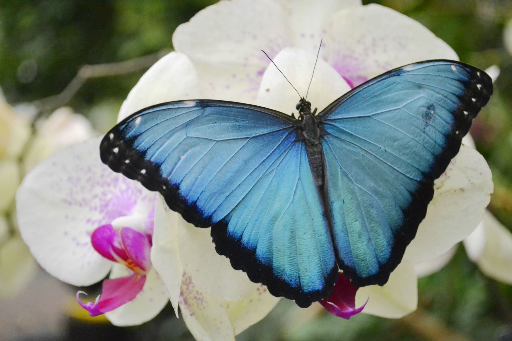
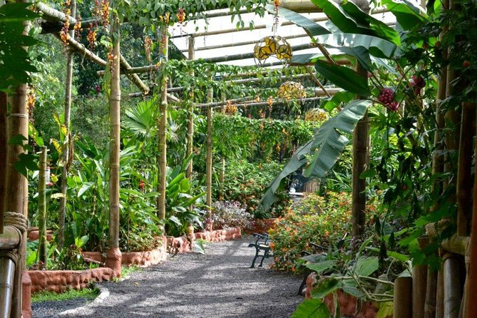

Descripción
El Mariposario de Mindo es un centro dedicado a la cría, conservación y exhibición de mariposas ecuatorianas. Cuenta con un recorrido al aire libre donde puedes observar mariposas en plena libertad, desde su etapa de oruga hasta su transformación final. Es un espacio educativo y fascinante para todas las edades.
Ubicación Geográfica
Está ubicado en el centro del pueblo de Mindo, a pocos minutos caminando desde el parque central. Mindo se encuentra a unos 90 km al noroeste de Quito, en la provincia de Pichincha.
Actividades para realizar
- Observar y fotografiar mariposas de muchas especies diferentes
- Aprender sobre el ciclo de vida de las mariposas
- Recorrer los jardines y senderos del centro
- Comprar artesanías y recuerdos
Galería de Imágenes


